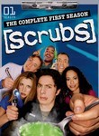
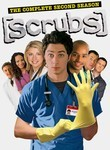
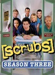
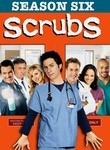
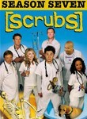
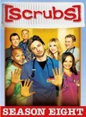
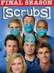

Scrubs







Stephen Klancher: February 2, 2009 
You ate all your cookies at once, what did you think would happen to them? [JD dreams Turk murdering them.]
Janitor's grandfather called him Janitor!
Denise is now a multidimentional character...
and Dr. Cox!
Janitor's grandfather called him Janitor!
Denise is now a multidimentional character...
and Dr. Cox!
Stephen Klancher: February 10, 2009
That was really a fantastic episode... I should rewatch this one sometime.
Stephen Klancher: February 12, 2009
Man, a lot a hilarious lines in this one. Sunny, who seemed kinda annoying in the Scrubs: Interns webseries, was actually funny here. Denise still rocking the fatty-lovin' crazy bitch role. Ted's "totally real" girlfriend Stephanie is pretty cool too. So, new characters are starting to mesh pretty well.
Stephen Klancher: February 14, 2009
Eagle! The janitor can't tell what's real... as my theory goes, this is because he isn't real. The whole show is in JD's mind. And JD is a mental patient.
Stephen Klancher: March 24, 2009
JD, you're IN the relationship, you have to care!
"Involuntary Luge!" "Eagle!" "That's gonna hurt..." "Glory always does."
"Involuntary Luge!" "Eagle!" "That's gonna hurt..." "Glory always does."
Stephen Klancher: March 29, 2009
The ____ Story episodes are kinda fun. They've pushed the new characters hard enough, I wonder if they are going to do a spin off series... other than the existing web episodes of Scrubs: Interns.
Stephen Klancher: April 4, 2009
Todd-on-the-defensive-Five!
No JD and lots of interns again. And Elliot directly saying that if she got married and didn't need money she' probably quit being a doctor.
Of course the series is ending this year, but it feels like they are also prepping for Scrubs: The Next Generation.
No JD and lots of interns again. And Elliot directly saying that if she got married and didn't need money she' probably quit being a doctor.
Of course the series is ending this year, but it feels like they are also prepping for Scrubs: The Next Generation.
Stephen Klancher: April 11, 2009
(After a high-five induced earthquake) And then we'd all have sex to celebrate surviving.
Stephen Klancher: May 27, 2009
I hear it really is going to continue, but I'm still sad the current form will end. Most of the characters are pretty solid, but losing JD sucks. Oh well. A pretty good eight years on the whole... time to watch the finale...
Stephen Klancher: May 27, 2009
Nice montage and everything. This show's Ross and Rachael finally had their moment. You know I don't mean JD and <i>Elliot</i> right? And the penny was really JD's fault!

Stephen Klancher: December 6, 2009
A mediocre start to the new generation of the series. Although I was so hungover I didn't finish watching it until later in the day.
Stephen Klancher: December 6, 2009
Better than the prior episode, but I'm still not feeling the strong Scrubs pull like I did in the past. Yet at least.
Stephen Klancher: January 5, 2010
I don't expect much of the series at this point, but there are still some funny moments there.
Stephen Klancher: July 6, 2011
I thought I might watch the rest of this at some point, but I'll say the same thing I said when I last watch an episode more than a year ago, there are still a few funny moments but it isn't as good as it was.
Stephen Klancher: July 10, 2011
JD! Watched this and the previous with Julie after being reminded firsthand how tiring it is to play DDR.
Stephen Klancher: July 12, 2011
I guess there was no point in making an "ending" episode after they had already done that twice before.
Elliot:"Do you still let the voice in your head control you?"
JD Voice:"This is getting too serious; Kick her! Kick her in the head!"
JD:"Not as much..."